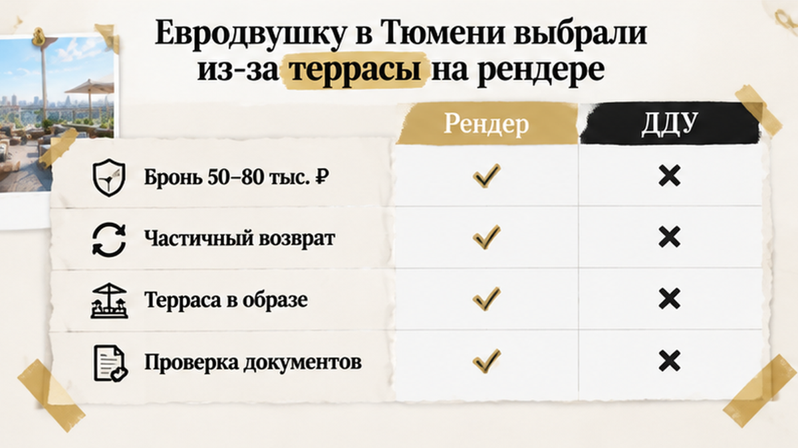
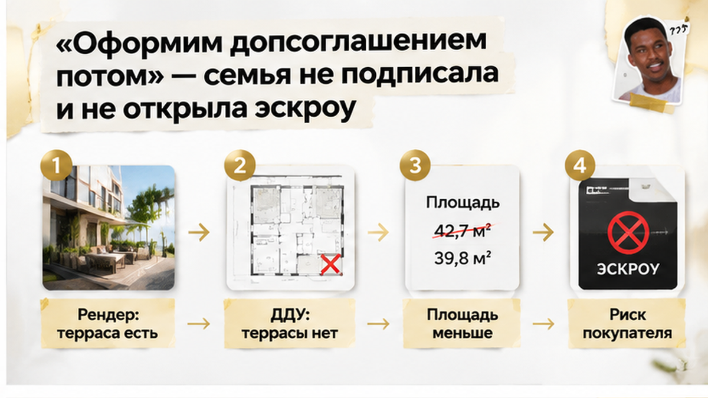
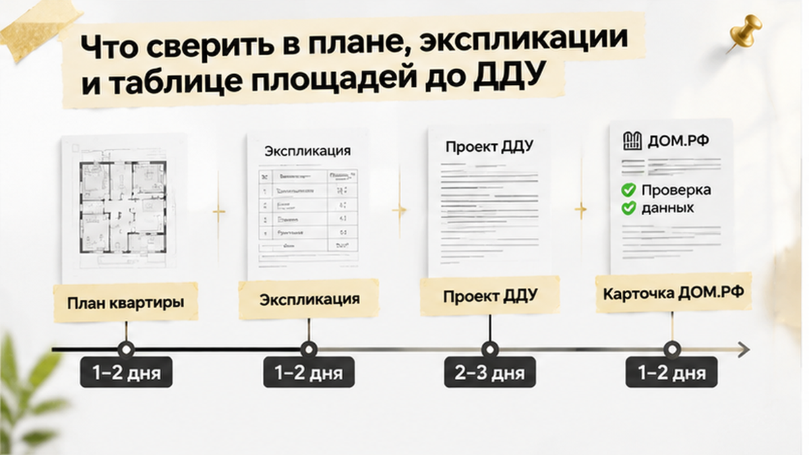
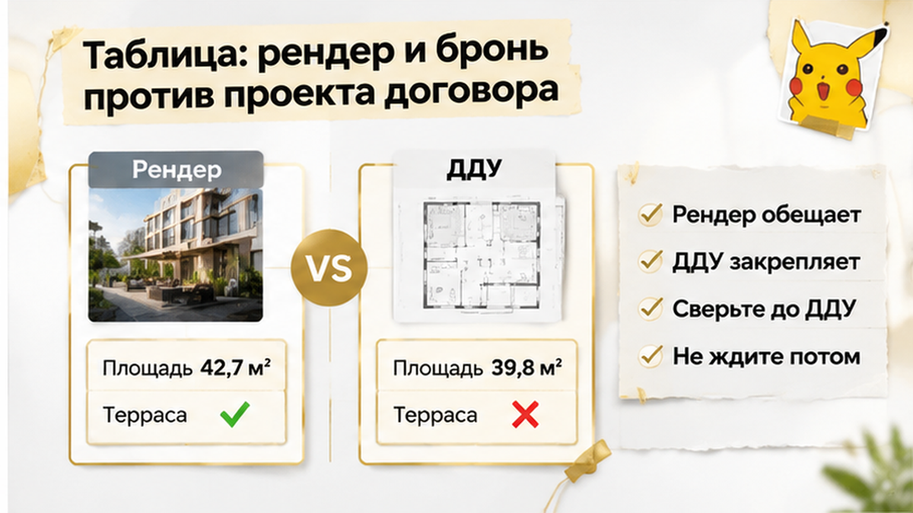

За четыре дня до подписания ДДУ семья в Тюмени выяснила: терраса площадью примерно 8–12 м² есть на рендере, но исчезла из проекта договора, а цена квартиры осталась прежней. Евродвушку выбирали именно из-за этого открытого пространства у кухни-гостиной — там уже мысленно стояли стол и кресла. В офисе застройщика показывали тот же красивый образ, который семья видела при бронировании. Но когда на стол легли план и экспликация, картинка перестала совпадать с квартирой, которую предлагали подписать.
Семья искала не просто квартиру с нужным количеством метров. Главной была планировка: кухня-гостиная с выходом на террасу. На визуализации пространство выглядело продолжением комнаты — широкий проём, свет, мебель и открытый участок рядом. Для будущих владельцев это была не декоративная деталь, а причина выбрать именно этот лот.
На рендере терраса занимала заметную часть сцены. Из-за неё квартира казалась просторнее и удобнее для жизни. Семью интересовал простой вопрос: что именно они получат после строительства — комнаты, окна, выход наружу и площадь каждого элемента.
В новостройке покупатель часто сначала видит не договор, а образ будущей квартиры: визуализацию, презентацию менеджера или план на экране. Такой материал помогает понять идею проекта, но не заменяет документы.
В ДДУ важны уже не слова «терраса предусмотрена», а план объекта, экспликация и указанные площади. Обычный покупатель видит знакомую картинку. Я в этот момент спрашиваю: где эта часть квартиры записана и что застройщик обязан передать?
Похожая история бывает и с отделкой. То, что показывают в маркетинге, не всегда совпадает с тем, что застройщик обязуется передать по договору. В одном из разборов по Тюмени обещанная чистовая отделка также упёрлась в текст ДДУ: на приёмке покупатели увидели, что состояние квартиры нельзя оценивать только по рекламе. Здесь расхождение обнаружилось раньше — ещё до строительства, когда семья сопоставила рендер с проектом договора.

После выбора семья внесла застройщику бронь примерно 50–80 тысяч рублей. В тексте брони лот был описан как вариант с террасой, а в офисе снова показывали ту же визуализацию. Реклама, слова менеджера и материалы бронирования складывались в понятную картину: квартира с террасой.
Поэтому будущие владельцы не воспринимали её как временную задумку дизайнера. Они выбирали конкретный объект с определёнными характеристиками и рассчитывали, что те перейдут в основной договор. Ипотека уже была в процессе оформления, оставалось дождаться проекта ДДУ.
Здесь важно разделить три вещи. Рендер показывает, как застройщик представляет будущий объект. Бронь фиксирует договорённости на этапе выбора, но её формулировки нужно читать отдельно: там может быть указано, что происходит с деньгами при отказе. А ДДУ должен описывать объект так, чтобы по договору были понятны его состав, планировка и площадь.
Если материалы не совпадают, нельзя автоматически считать главным тот, который показал менеджер. Нужно увидеть, где закреплена спорная характеристика и что произойдёт с бронью, если покупатель не согласится подписывать другой объект. В этой истории ответ появился, когда семье направили проект ДДУ незадолго до подписания.
Тогда стало понятно: красивый образ на экране ещё не означает наличие террасы в выбранном виде. Вопрос пришлось решать по плану, экспликации и таблице площадей в договоре.
Похожий разрыв между обещанием при бронировании и документами я разбирал в истории, где земля под ЖК оказалась в аренде, хотя в брони обещали собственность. Название и картинка помогают выбрать квартиру. Подписывать нужно то, что застройщик закрепил в договоре.
За четыре дня до подписания семья получила проект ДДУ — договор, по которому застройщик должен передать квартиру. И тут красивая евродвушка изменилась: на плане не было террасы.
Из кухни-гостиной выходить оказалось некуда — если смотреть на описание объекта в договоре. В экспликации, то есть расшифровке помещений и площадей, террасы тоже не оказалось.
Общая площадь стала меньше, а цена осталась прежней. Для семьи это была уже не та квартира: терраса примерно на 8–12 квадратных метров была не деталью картинки, а причиной выбрать этот лот.
Название «лоджия-терраса» ничего не меняет. Красивые слова не добавляют помещение на план, а бронь не закрывает разницу между рекламой и тем, что предлагают подписать.
В части 4 статьи 4 закона № 214-ФЗ предусмотрено описание объекта с планом. В нём указываются в том числе лоджии, балконы, веранды, террасы и их площади.
Смысл простой: обещанную часть квартиры нужно искать не только на рендере, но и в договоре. Если её нет одновременно на плане и в расшифровке площадей, сначала нужно понять, какой объект действительно передадут семье.
Ипотека в этот момент была в заявке. Значит, расхождение касалось не только планировки, но и кредитной сделки.
Меньшая площадь сама по себе не означает автоматический отказ в ипотеке. Но если в банк уже ушли другие сведения о квартире, условия могли потребовать пересмотра до подписания.
Подписывать договор в надежде, что потом добавят террасу и подгонят ипотечные документы, означало оставить открытыми сразу два важных вопроса.
На отсутствие террасы менеджер ответил обещанием оформить её дополнительным соглашением после подписания. Но семье предлагали сначала согласиться с квартирой без этой части в документах, а уже потом ждать исправлений.
Устное «потом допишем» не меняло план, таблицу площадей и цену присланного проекта. Дополнительное соглашение ещё предстояло получить, а подписывать нужно было уже существующий текст.
Семья остановила сделку: ДДУ не подписала, счёт эскроу не открыла и деньги за квартиру на него не внесла.
Полностью без потерь выйти не получилось: из брони примерно 50–80 тысяч рублей вернули только часть. Обещать полный возврат неправильно — всё зависит от текста соглашения о бронировании.
Результат понятен: часть брони потеряна, но договор на квартиру без указанной террасы заключён не был.
Это не повод объявлять застройщика мошенником. Это конкретная причина не принимать предложенные условия.
До регистрации ДДУ и перечисления денег на эскроу семья могла остановиться, не переходя к расторжению уже оформленной сделки. После регистрации разговор был бы другим: с документами, основаниями и сроками.
Здесь его не стали начинать с подписи под обещанием исправить главное позднее.
Если терраса есть на картинке и в брони, но нет в проекте ДДУ — подписываете с обещанием допсоглашения или стоп до эскроу?
Если выбираете новостройку в Тюмени, присоединяйтесь к моим каналам в Telegram и MAX. Разбираем документы не ради сложных формулировок, а ради понятного ответа: что именно вы покупаете и за что платите. Такие расхождения полезнее увидеть, пока проект договора ещё можно не подписывать.

Положите рядом бронь, рендер и проект ДДУ с приложениями. В договоре найдите план своей квартиры, затем экспликацию — расшифровку помещений и площадей.
Если терраса есть только на картинке, совпадения ещё нет, даже при одинаковых этаже, окнах и планировке.
Посмотрите проектную декларацию на ДОМ.РФ и в ЕИСЖС — единой системе жилищного строительства. Условия ДДУ должны совпадать с тем, что зафиксировано по проекту на дату заключения договора.
Но декларация не заменяет план квартиры в договоре. Сверяйте оба документа, а не выбирайте тот, где описание выглядит выгоднее.
Площадь нужно рассматривать отдельно. Закон допускает расчёт по приведённой площади: холодные части могут учитываться с коэффициентами, предусмотренными приказом Минстроя № 854/пр. Проще говоря, метр террасы может участвовать в расчёте не так, как метр комнаты.
Но коэффициент касается части объекта, указанной в договоре. Он не объясняет, почему терраса исчезла из описания целиком.
Поэтому меньшая площадь при прежней цене требует ответа по тексту ДДУ: за какой объект установлена цена, какие помещения входят в площадь, где указана спорная терраса и как она учтена?
С отделкой тот же принцип. В разборе истории с обещанной чистовой отделкой и голыми стенами на приёмке решающим оказался не рекламный образ, а обязательство застройщика по договору. Проверять его нужно уже на бумаге.
Сопоставьте сведения с ипотечной заявкой. Если площадь или параметры объекта в ней не совпадают с проектом ДДУ, уточните это у банка до подписания — иначе согласование может затянуться.
Банковская проверка не заменяет вашу. История, где банк остановил перевод из-за чужого юридического лица в реквизитах, касалась другого расхождения — не всех обещаний о планировке.

У документов разное назначение. Рендер показывает замысел будущей квартиры, бронь фиксирует договорённости при резервировании, а ДДУ описывает объект, который застройщик обязуется передать.
Не дополняйте один документ другим. Так отсутствующая строка превращается в успокаивающее: «Мы же это обсуждали».
| Что сравниваем | Рендер и бронь | Проект ДДУ |
|---|---|---|
| Терраса | Что показали и закрепили при резервировании | Есть ли она на плане и указана ли её площадь |
| Метры | С какой площадью выбирали квартиру | Что записано в экспликации и таблице площадей |
| Цена | На какую стоимость рассчитывали | За какой объект платите и как рассчитана сумма |
| Исправления | Что обещают добавить позднее | Что уже включено в текст к подписанию |

Пауза перед подписью — не отказ от покупки. Это возможность получить согласованные документы: чтобы планировка, бронь, проект ДДУ и ипотечные сведения говорили об одном объекте.
Если застройщик присылает исправленный текст, его можно проверить заново. А обещание дополнительного соглашения вместо отсутствующей террасы пока проверить не в чем.
Лучше принять решение до эскроу, чем потом разбираться с зарегистрированным договором и принятыми обязательствами. Я веду сделку именно в этой точке: сопоставляю бронь, приложения, площади и условия ипотеки до подписи.